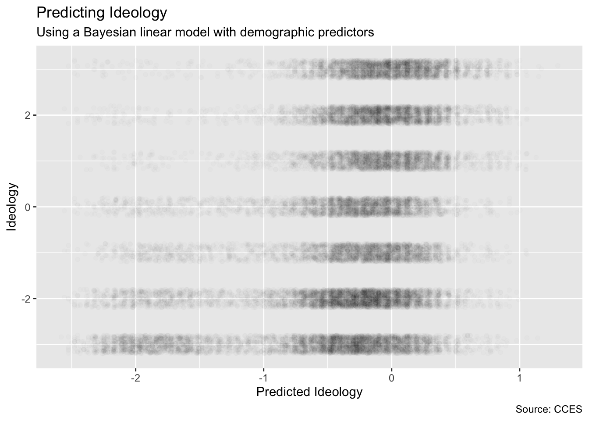
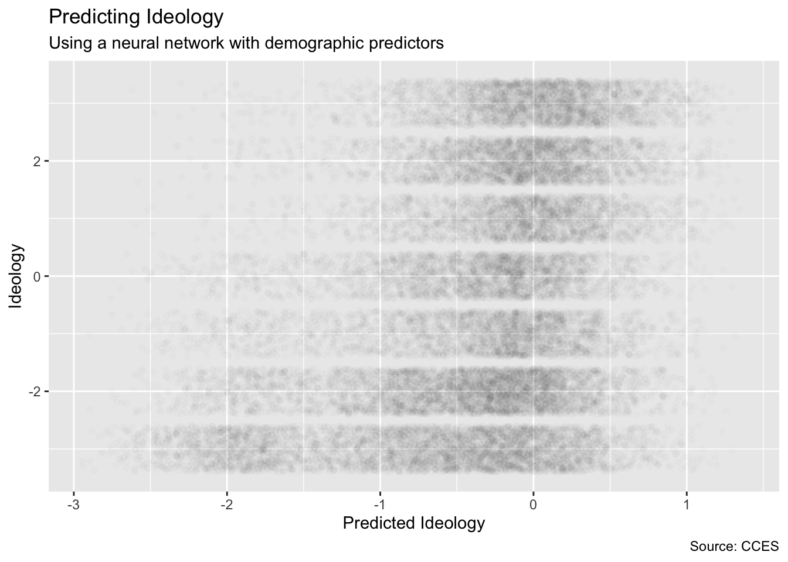

Chapter 11 Continuous Response
Chapter 10 showed us the tidymodels framework for model building and testing. In this chapter, we will use it to explore models in which the outcome variable is continuous. In Chapter 12, we learn about outcome variables which are discrete, meaning that they are members of distinct categories like TRUE/FALSE or yes/no.
We use nes from the PPBDS.data package. nes contains data from the American National Election Survey for every presidential election year since 1952. Along with demographic details, such as race, gender, and age, the survey also includes respondents’ ideological identification. Because ideology is measured on a scale from -3 to 3, we can treat it as a continuous outcome variable.
11.1 Exploratory Data Analysis
Packages:
Explore nes:
## Rows: 38,558
## Columns: 11
## $ year <int> 1952, 1952, 1952, 1952, 1952, 1952, 1952, 1952, 1952, 1952,…
## $ state <chr> "NY", "NY", "NY", "NY", "OH", "OH", "ID", "MI", "GA", "OH",…
## $ gender <chr> "Female", "Female", "Female", "Male", "Female", "Female", "…
## $ income <ord> 68 - 95, 68 - 95, 34 - 67, 34 - 67, 0 - 16, 68 - 95, 0 - 16…
## $ age <ord> 25 - 34, 25 - 34, 25 - 34, 55 - 64, 65 - 74, 45 - 54, 65 - …
## $ education <ord> Highschool, Elementary, Highschool, Some Highschool, Highsc…
## $ race <chr> "White", "White", "White", "White", "White", "White", "Whit…
## $ ideology <int> 2, 1, 0, 3, 3, -1, 0, -2, NA, 2, -2, 3, -1, -2, 3, -2, -3, …
## $ pres_appr <chr> NA, NA, NA, NA, NA, NA, NA, NA, NA, NA, NA, NA, NA, NA, NA,…
## $ voted <chr> "Yes", "Yes", "Yes", "Yes", "Yes", "Yes", "Yes", "Yes", "No…
## $ region <fct> Northeast, Northeast, Northeast, Northeast, Midwest, Midwes…Variables available in nes. Note that the full NES has many more variables available.
-
year: the year the study was conducted. -
state: abbreviation for state of residence. -
gender: identifies respondents with values “Male” and “Female”. -
race: race/ethnicity respondent identification. -
income: 5 income groups described with percentile range: 0-16, 17-33, 34 to 67, 68-95, and 96-100. -
age: ranges for respondents’ age. -
education: seven categories of educational achievement. -
pres_appr: respondents’ self-reported approval of the sitting president. -
voted: whether the respondent had voted in the presidential election. -
ideologya continuous variable with -3 corresponding to strongly Democrat and 3 corresponding to strongly Republican. -
region: US region: Northeast, Midwest, West, and South.
Given knowledge of these variables for a new person, our goal is to predict their ideology correctly.
TABLE 11.1: Data summary
| Name | nes |
| Number of rows | 38558 |
| Number of columns | 11 |
| _______________________ | |
| Column type frequency: | |
| character | 5 |
| factor | 4 |
| numeric | 2 |
| ________________________ | |
| Group variables | None |
Variable type: character
| skim_variable | n_missing | complete_rate | min | max | empty | n_unique | whitespace |
|---|---|---|---|---|---|---|---|
| state | 110 | 1.00 | 2 | 2 | 0 | 50 | 0 |
| gender | 141 | 1.00 | 4 | 6 | 0 | 3 | 0 |
| race | 287 | 0.99 | 5 | 15 | 0 | 6 | 0 |
| pres_appr | 9646 | 0.75 | 6 | 10 | 0 | 3 | 0 |
| voted | 4078 | 0.89 | 2 | 3 | 0 | 2 | 0 |
Variable type: factor
| skim_variable | n_missing | complete_rate | ordered | n_unique | top_counts |
|---|---|---|---|---|---|
| income | 2517 | 0.93 | TRUE | 5 | 34 : 11740, 68 : 9974, 0 -: 6300, 17 : 6213 |
| age | 450 | 0.99 | TRUE | 7 | 25 : 7669, 35 : 7342, 45 : 6545, 55 : 6021 |
| education | 397 | 0.99 | TRUE | 7 | Hig: 9269, Som: 8540, Col: 5540, Som: 4688 |
| region | 0 | 1.00 | FALSE | 4 | Sou: 13680, Mid: 10072, Wes: 7428, Nor: 7378 |
Variable type: numeric
| skim_variable | n_missing | complete_rate | mean | sd | p0 | p25 | p50 | p75 | p100 | hist |
|---|---|---|---|---|---|---|---|---|---|---|
| year | 0 | 1.00 | 1989.40 | 20.5 | 1952 | 1972 | 1992 | 2012 | 2016 | ▃▃▃▃▇ |
| ideology | 619 | 0.98 | -0.38 | 2.1 | -3 | -2 | -1 | 2 | 3 | ▇▂▂▂▅ |
There are three data types: factors, characters, and numeric. income, age, and education are ordered factors. This means that each factor level has a relationship with the others. In the age variable, for example, 25 - 34 is bigger 17 - 24 and smaller than 35 - 44. But there is no sense of how much bigger or smaller it is. Ordered factors can have weird effects in certain models, so we need to be wary.
Note that all of the variables are incomplete, meaning they contain NA values. While there are methods to impute missing data, we will simply remove these values for now.
The first step in a proper data science project is to split our data set into training and testing samples, and then to create cross-validations from the training data.
set.seed(10)
ch11_split <- initial_split(ch11, prob = 0.80)
ch11_train <- training(ch11_split)
ch11_test <- testing(ch11_split)
ch11_folds <- vfold_cv(ch11_train, v = 10)We can now explore three different models for this problem: a traditional linear model, a Bayesian linear model, and a neural network.
11.2 Linear model
Create the workflow object with the model engine.
The parsnip package allows us to create an engine that can run this linear regression model easily and repeatedly. linear_reg() tells the engine that this is a linear regression. set_engine("lm") tells the engine to use the lm() function. set_mode() has two options: “regression” and “classification.” Since our left-hand variable is continuous, we will set it to “regression.” If it were categorical, we would set the mode to “classification”. The default is “regression,” so the set_mode() command has no effect in this case.
Add a recipe.
lm_wfl <- workflow() %>%
add_model(linear_reg() %>%
set_engine("lm") %>%
set_mode("regression")) %>%
add_recipe(recipe(ideology ~ gender + race + region +
income + age + education,
data = ch11_train) %>%
step_dummy(all_nominal())
) The required parts of the recipe are the model and a data set. The data set does not really matter that much since we are not really using it for anything at this stage of the process. Its purpose is to ensure that tidymodels can process the recipe. To do so, it needs to know if, for example, gender is character or factor or numeric. You would get the same result whether you used ch_11, ch_11_train or ch_11_test as the value for data. But, it is a good habit to never use the test data until the very end, even if doing so is harmless.
The formula portion of the recipe will, depending in the model, look a lot like the formulas which you have passed to stan_glm(). But, in tidymodels, we are not allowed to do any mathematical operations in the recipe itself, beyond addition. Any such operations need to be placed in step_* functions. Recall how, in Chapter 10, we used step_interact() to add an interaction term. Figuring out which step_* functions we want to use and why is the hardest part of tidymodels.
Examine performance on the cross-validation samples.
## # A tibble: 2 x 5
## .metric .estimator mean n std_err
## <chr> <chr> <dbl> <int> <dbl>
## 1 rmse standard 1.98 10 0.00632
## 2 rsq standard 0.102 10 0.00401Check the predictions against the actual values for the training data.
lm_wfl %>%
fit(data = ch11_train) %>%
predict(new_data = ch11_train) %>%
bind_cols(ch11_train %>% select(ideology)) %>%
ggplot(aes(y = ideology, x = `.pred`)) +
geom_jitter(height = 0.2, alpha = 0.01) +
labs(title = "Predicting Ideology",
subtitle = "Using a linear model with demographic predictors",
x = "Predicted Ideology",
y = "Ideology",
caption = "Source: CCES") Is this result good or bad? Depends on your point of view! If we predict that someone’s ideology is 0, then we don’t know that much about their ideology. It could be an anywhere from -3 (strong Democrat) to +3 (strong Republican).
11.3 Bayesian linear model
Create the workflow object with the model engine. Note that every part is the same as the linear model we just completed except that the required engine is “stan”.
stan_wfl <- workflow() %>%
add_model(linear_reg() %>%
set_engine("stan") %>%
set_mode("regression"))Add a recipe.
stan_wfl <- workflow() %>%
add_model(linear_reg() %>%
set_engine("stan") %>%
set_mode("regression")) %>%
add_recipe(recipe(ideology ~ gender + race + region +
income + age + education,
data = ch11_train) %>%
step_dummy(all_nominal())
) Examine performance on the cross-validation samples.
stan_metrics <- stan_wfl %>%
fit_resamples(resamples = ch11_folds) %>%
collect_metrics()
stan_metrics## # A tibble: 2 x 5
## .metric .estimator mean n std_err
## <chr> <chr> <dbl> <int> <dbl>
## 1 rmse standard 1.98 10 0.00632
## 2 rsq standard 0.102 10 0.00401Check the predictions against the actual values.
stan_wfl %>%
fit(data = ch11_train) %>%
predict(new_data = ch11_train) %>%
bind_cols(ch11_train %>% select(ideology)) %>%
ggplot(aes(y = ideology, x = `.pred`)) +
geom_jitter(height = 0.2, alpha = 0.01) +
labs(title = "Predicting Ideology",
subtitle = "Using a Bayesian linear model with demographic predictors",
x = "Predicted Ideology",
y = "Ideology",
caption = "Source: CCES")
11.4 Neural networks
Neural networks are a powerful “non-parametric” approach to forecasting. Recall that, in both lm() and stan_glm() models, there are specified parameters which we are trying to estimate. We “care” about these parameters because they often correspond to real world entities, like the average treatment effect.
With non-parametric models, there are no parameters which we care about. (That is a loose and not-quite-correct definition.) Instead, the model is a “black box” into which predictors are fed and from which predicted outcomes emerge.
Create the workflow object with the model engine.
nn_wfl <- workflow() %>%
add_model(mlp(epochs = 100,
hidden_units = 5,
dropout = 0.1) %>%
set_engine("keras", verbose = 0) %>%
set_mode("regression"))The next step is to add a recipe.
nn_wfl <- workflow() %>%
add_model(mlp(epochs = 100,
hidden_units = 5,
dropout = 0.1) %>%
set_engine("nnet") %>%
set_mode("regression")) %>%
add_recipe(recipe(ideology ~ gender + race + region +
income + age + education,
data = ch11_train) %>%
step_dummy(all_nominal())
)Note that there are improvements we could make to this model. As a rule of thumb, whenever using non-parametric models, you should use step_normalize(all_numeric()) which, as you might guess, normalizes all numeric variables.
Examine performance on the cross-validation samples.
## # A tibble: 2 x 5
## .metric .estimator mean n std_err
## <chr> <chr> <dbl> <int> <dbl>
## 1 rmse standard 1.97 10 0.00575
## 2 rsq standard 0.111 10 0.00422Check the predictions against the actual values.
nn_wfl %>%
fit(data = ch11_train) %>%
predict(new_data = ch11_train) %>%
bind_cols(ch11_train %>% select(ideology)) %>%
ggplot(aes(y = ideology, x = `.pred`)) +
geom_jitter(width = 0.2, alpha = 0.01) +
labs(title = "Predicting Ideology",
subtitle = "Using a neural network with demographic predictors",
x = "Predicted Ideology",
y = "Ideology",
caption = "Source: CCES")
11.5 Model comparison
The most common method for deciding which model to choose is to look at which one does the best predicting out of sample. As a reminder, here is a summary of how well our three different models performed.
tibble(model = rep(c("Linear Model",
"Bayesian Linear Model",
"Neural Network"), each = 2)) %>%
bind_cols(bind_rows(lm_metrics, stan_metrics, nn_metrics)) ## # A tibble: 6 x 6
## model .metric .estimator mean n std_err
## <chr> <chr> <chr> <dbl> <int> <dbl>
## 1 Linear Model rmse standard 1.98 10 0.00632
## 2 Linear Model rsq standard 0.102 10 0.00401
## 3 Bayesian Linear Model rmse standard 1.98 10 0.00632
## 4 Bayesian Linear Model rsq standard 0.102 10 0.00401
## 5 Neural Network rmse standard 1.97 10 0.00575
## 6 Neural Network rsq standard 0.111 10 0.00422The results for the neural network model are slightly better than those for either linear model.
11.6 Cardinal virtues


The lessons of the Cardinal Virtues continue to apply.
Wisdom asks us if the problem we are trying to solve is “close enough” to the data we have that we might fairly consider both to come from the same population. Using US data from 2016 to create a model of ideology for the US in 2020 is reasonable. Using US data from 2016 to create a model of ideology for Brazil in 1966 is less so.
Justice instructs us to distinguish causal from predictive models. This mode is clearly predictive. None of our demographic covariates were randomly assigned. It is possible to manipulate a variable like income, and therefore to consider (at least) two potential outcomes for a given person: ideology if rich and ideology if poor. But, although a causal model for the effect of income on ideology is at least conceivable, it is highly unlikely that such a model would provide a good estimate of the causal effect because income was not assigned randomly. Without random assignment, estimate causal effects is very, very difficult. Regressions and Other Stories by Andrew Gelman, Jennifer Hill, and Aki Vehtari is a good introduction.
Recall that all we care about in a predictive model is forecasting some value \(y_i\) given that we know \(x_{i_1}, x_{i_2}, ... x_{i_n}\). The \(y_i\) in our case is ideology. The \(x_{i_1}, x_{i_2}, ... x_{i_n}\) are certain known variables, such as state, age, and income, among others. \(\beta\) stands the list of unknown parameters which must be estimated.
The following equation calculates the ideology of the ith respondent, \(y_i\), as a function of the data and the unknown parameters.
\[y_i = f(x_{i_1}, x_{i_2}, ..., \beta)\]
Keep in mind that our goal is to create the best possible model to predict someone’s ideology given a number of demographic variables. That is to say, we plan on using our model on out-of-sample data. Cross validation is the method we will use to forecast how well the model will work on this unseen data.

Courage helps us to fit the models, as we have above, and then to select the one we want to use. We should only favor more complex models (or formulas) if the additional complexity is warranted. This is a philosophical principle known as “Occam’s Razor.” It states that, “all other things being equal, simpler solutions are more likely to be correct than complex ones.” When viewed in a modeling framework, Occam’s Razor can be restated as, “all other things being equal, simpler models are to be preferred over complex ones.” In other words, we should only favor the more complex model/formula if the additional complexity makes the model meaningfully better.
Is the neural network model meaningfully better than the linear models? Perhaps. Average RMSE is lower but, given the standard error associated with that measure, it is close call. Let’s use the neural network model.

Temperance reminds us to be suspicious of all models, especially our own. The world is always changing. Our models will rarely work as well in the future as they have using data from the past.
11.7 Summary
The purpose of this chapter way to practice using tidymodels tools for model selection. The most important measure of model quality is how well the model does on out-of-sample data. Cross validation is only one of many ways to estimate that performance, but it is probably the most popular. For details on other approaches, read Chapter 10 of Tidy Modeling with R by Max Kuhn and Julia Silge.
Page built: 2020-11-12